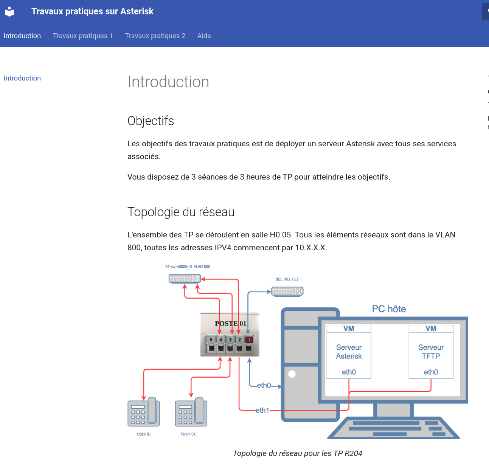

AC12.01 - Mesurer, analyser et commenter les signaux
Ce que j’ai fait : Analyse de signaux électriques à l’aide d’outils de mesure.
Pourquoi : Comprendre le comportement des signaux en transmission.
Comment : Utilisation d’un oscilloscope et interprétation des résultats.
Difficultés : Lecture et interprétation des signaux complexes.
Ce que j’en ai appris : Bases solides en analyse de signaux.
Ce que je ferais autrement : Multiplier les exercices pratiques.
AC12.02 - Caractériser des systèmes de transmission
Ce que j’ai fait : Étude des systèmes de transmission et de leur modélisation.
Pourquoi : Comprendre le fonctionnement des communications.
Comment : Analyse théorique et exercices de modélisation mathématique.
Difficultés : Modélisation et formules complexes.
Ce que j’en ai appris : Vision globale des systèmes de transmission.
Ce que je ferais autrement : Faire plus de liens avec des cas concrets.
AC12.03 - Déployer des supports de transmission
Ce que j’ai fait : Installation de câbles réseau et supports de transmission.
Pourquoi : Assurer la communication physique entre équipements.
Comment : Câblage Ethernet, tests de continuité et validation.
Difficultés : Respect des normes et erreurs de câblage.
Ce que j’en ai appris : Importance du support physique.
Ce que je ferais autrement : Vérifier systématiquement chaque câble.
AC12.04 - Connecter les systèmes de ToIP
Ce que j’ai fait : Mise en place de systèmes de téléphonie sur IP.
Pourquoi : Permettre la communication vocale via le réseau.
Comment : Configuration de téléphones IP et serveurs.
Difficultés : Paramétrage réseau et qualité de service.
Ce que j’en ai appris : Fonctionnement de la ToIP.
Ce que je ferais autrement : Tester différents scénarios réseau.
AC12.05 - Communiquer avec un tiers
Ce que j’ai fait : Communication avec clients et collaborateurs.
Pourquoi : Adapter son discours selon l’interlocuteur.
Comment : Présentations, échanges écrits et oraux.
Difficultés : Adapter le vocabulaire technique.
Ce que j’en ai appris : Importance de la communication.
Ce que je ferais autrement : M’entraîner davantage à vulgariser.
📁 Annexes & Ressources Complémentaires
📸 Image :

🎥 Démonstration vidéo : (cliquez sur "Regarder la vidéo sur Youtube)
🔗 Liens utiles :
Lien GitHib de ma SAE12 ↗